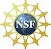
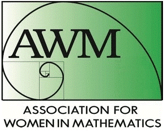

An Afternoon in Honor
of CORA SADOSKY
Friday April 4th, 2014.
University of New Mexico,
Albuquerque, New Mexico
Cora was an exceptional
mathematician and human being. She was a world expert in harmonic
analysis and operator theory. She published
over fifty five research papers, several of
them co-authored with Mischa Cotlar.
Cora was also the author of a wonderful
graduate textbook “Interpolation of
operators and singular integrals. An
introduction to harmonic analysis.”
(Marcel Dekker 1979).
This Afternoon in Honor of Cora Sadosky is intended to highlight her mathematical contributions and her legacy through the mathematics that continued. The invited speakers are:
 Funded by a
grant of the DMS-NSF 1400429
 In Collaboration with the AWM |